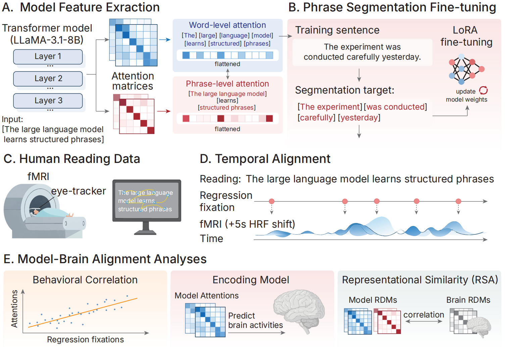
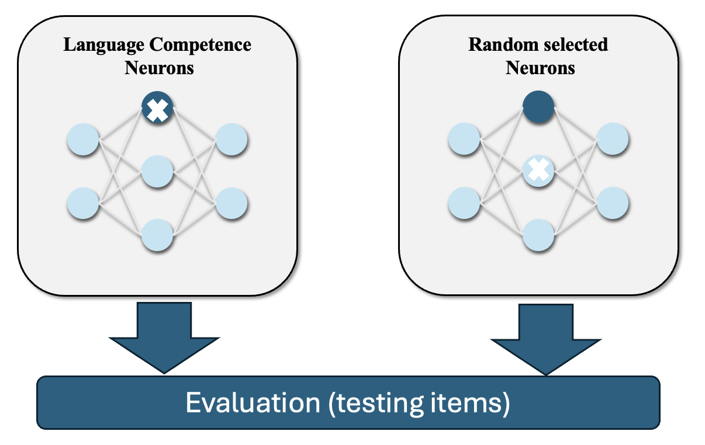
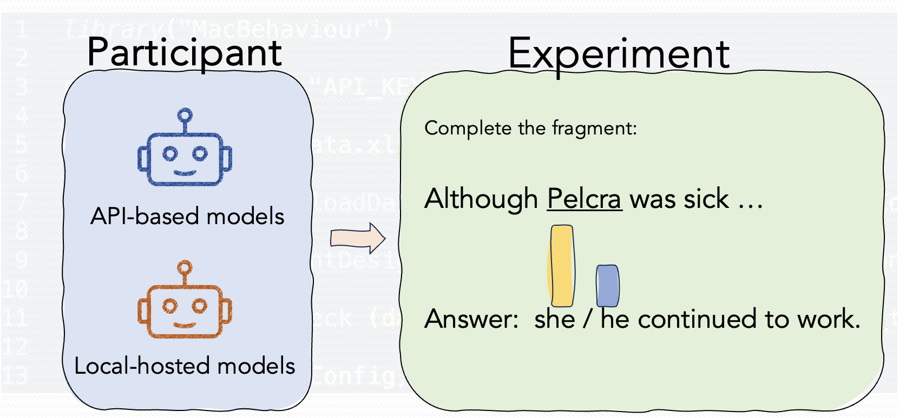

About Me

Xufeng Duan (段旭峰)
I am a Research Assistant Professor in the Language Processing Lab at Brain and Mind Institute, The Chinese University of Hong Kong (CUHK).My research focuses on human language production and large language models (LLMs). I use behavioral, EEG, and fMRI data, along with computational methods, to explore the mechanisms of the human language system. I also work on mechanistic interpretability, which aims to reverse-engineer the internal workings of LLMs to understand how specific computations (e.g., syntax, prediction) are implemented. Additionally, I am trained and licensed in TMS for research purposes in Hong Kong and have completed an internship as a language therapist/researcher specializing in aphasia at the Third Affiliated Hospital of Sun Yat-sen University.
Email: xufengduan@cuhk.edu.hk
Google Scholar
Curated Research

Do Large Language Models Acquire Phrase-Based Processing?
Eye tracking, fMRI, and model–brain alignment show phrase-level processing in LLMs and stronger alignment after phrase-segmentation fine-tuning.
10.18653/v1/2026.scil-main.44
Unveiling Language Competence Neurons: A Psycholinguistic Approach to Model Interpretability
Identifying interpretable units in large language models aligned with psycholinguistic effects, bridging model neurons and human linguistic competence.
2025.coling-main.677
MacBehaviour: An R package for behavioural experimentation on large language models
An open-source R toolkit to help researchers quickly set up behavioral experiments interacting with LLMs, either locally or in the cloud.
10.3758/s13428-024-02524-yAcademic Service
Journal Reviewing
I serve as a reviewer for journals spanning NLP and artificial intelligence, and neuro/cognitive science.
NLP / Artificial intelligence
- Computational Linguistics
- IEEE Intelligent Systems
- IEEE Transactions on Affective Computing
- International Journal of Applied Linguistics
- Journal of Language Modelling
- Information Sciences
- Data
- Applied Artificial Intelligence
- International Journal of Human-Computer Interaction
Neuro/cognitive science
- PLOS ONE
- Behavior Research Methods
- Psychology Communications
- Cognitive Science
- Journal of Neurolinguistics
- Acta Psychologica
- Cognitive Processing
- Social Sciences & Humanities Open
Community Outreach
Alongside my research, I try to contribute to the Chinese academic community to share new methods and theories. With my colleagues, I initiated a WeChat public account (微信公众号) 计算神经语言学, Computational Neurolinguistics) that shares research article commentaries in Chinese. I also run the Computational Neurolinguistics Forum, which has hosted several invited speakers.
Conference / Workshop Committee
Program Committee member for the 2nd Workshop on LLM Agents for Social Simulation (LASS 2026), co-located with ACM CIKM 2026.
Supervision and Mentorship
I have supervised and mentored PhD students and research assistants working on psycholinguistics, large language models, and cognitive neuroscience.
| Name | Role & affiliation |
|---|---|
| Bei Xiao | PhD Student, co-supervised with Prof. Zhenguang Cai, The Chinese University of Hong Kong. CUHK PhD Studentship. (Will visit the Ted Lab at MIT in 2027.) |
| Zhaoqian Yao | Research Assistant, The Chinese University of Hong Kong. (Received a PhD offer from CUHK in 2026.) |
| Beijia Kan | Research Assistant, The Chinese University of Hong Kong. (Received a PhD offer from CUHK in 2026.) |
Publications
Total: Loading... publications • Auto-generated from bibliography
Loading publications...
Conference Talks
Xufeng Duan, Zhaoqian Yao, Yunhao Zhang, Shaonan Wang & Zhenguang Cai. How Syntax Specialization Emerges in Language Models (2026). 39th Annual Conference on Human Sentence Processing. MIT, Cambridge, MA, March 26–28. Session: Computational models (e.g., LLMs, information-theoretic models). Room 10-250.Xufeng Duan MacBehaviour: An R package for behavioural experimentation on large language models. (2024). Architectures and Mechanisms for Language Processing Asia (AMLaP Asia). Singapore.
Xufeng Duan The Neural Basis of Decline in Written Production: Evidence from Chinese Handwriting (2024). The annual meeting of Society for the Neurobiology of Language (SNL) . Brisbane, Australia.
Xufeng Duan Humanlike language use in LLMs (2024). CogSci Hong Kong Meetup Hong Kong, China.
Xufeng Duan Chinese translations of English words: A comparison between human and ChatGPT translations (2023). Architectures and Mechanisms for Language Processing Asia (AMLaP Asia). Hong Kong, China.
Zhenguang Cai, Xufeng Duan, Lu Sun, and Martin Pickering. Structural priming in ChatGPT (2023). Architectures and Mechanisms for Language Processing Asia (AMLaP Asia). Hong Kong, China.
Zhenguang Cai, Xufeng Duan, David Haslett, Shuqi Wang & Martin Pickering. Do language models resemble humans in language use (2023)? Architectures and Mechanisms for Language Processing (AMLaP). Donostia-San Sebastián, Spain.
Zhuang Qiu, Xufeng Duan, and Zhenguang Cai. Does ChatGPT Resemble Humans in Processing Implicatures (2023)? Proceedings of the 4th Natural Logic Meets Machine Learning Workshop, pages 25–34, Nancy, France. Association for Computational Linguistics.
Xufeng Duan(2018). Language rehabilitation training therapies for Chinese aphasia— Using Chinese characters as clues. Beyond A Limited Scope: Chinese for Specific, Academic, & Professional Purposes Hawaii, US.
Xufeng Duan(2018). The Dependence on different symbolic systems during word recognition-pronunciation tests by Chinese native speakers with aphasia——based on eye-movement methodology. Annual Conference of the Chinese Society of Neurological Linguistics. Xuzhou, China.
Xufeng Duan(2018). The Rules of Prominence and Locality Psychological Reality Basis. Annual Academic Conference of the Chinese Linguistic Society. Guangzhou, China.
Poster Presentations
Xufeng Duan, Bei Xiao, Beijia Kan & Zhenguang Cai. (2026). StimMAS: A Multi-Agent Framework for Automated Linguistic Stimulus Construction in Psychological Research. 39th Annual Conference on Human Sentence Processing. MIT, Cambridge, MA, March 26–28.Zhenguang Cai, Xufeng Duan, Lu Sun & Martin J. Pickering. (2026). Do syntax-like representations emerge in LLMs? Evidence from structural priming. 39th Annual Conference on Human Sentence Processing. MIT, Cambridge, MA, March 26–28.
Yichi Zhang, Xufeng Duan & Zhenguang Cai. (2024). The causal role of left inferior frontal gyri in Chinese character handwriting: A transcranial magnetic stimulation study. The annual meeting of Society for the Neurobiology of Language (SNL) . Brisbane, Australia.
Zhuang Qiu, Xufeng Duan & Zhenguang Cai. (2024). Do Large Language Models Resemble Humans in Grammaticality Judgment? Human sentence processing 2024 . University of Michigan, USA.
Xufeng Duan, Zhenguang Cai & Bo Yao. (2023). Electrophysiological responses associated with character amnesia in Chinese handwriting. Architectures and Mechanisms for Language Processing (AMLaP). Donostia-San Sebastián, Spain.
Hanlin Wu, Xufeng Duan & Zhenguang Cai. (2023). Belief of Speakers' Linguistic Competence Modulates the N400 Effect Elicited by Inconsistent Lexical Use. Architectures and Mechanisms for Language Processing (AMLaP). Donostia-San Sebastián, Spain.
Zhuang Qiu, Xufeng Duan, Zhenguang Cai & Nan Zhao. (2023). Pragmatic Implicature Processing in ChatGPT. Architectures and Mechanisms for Language Processing (AMLaP). Donostia-San Sebastián, Spain.